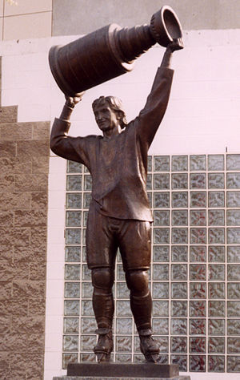
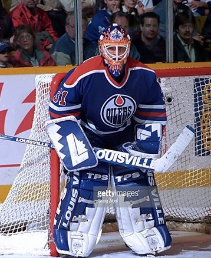
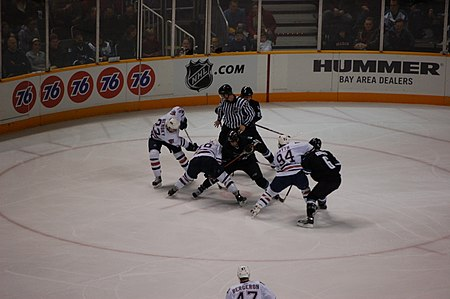
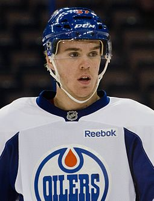

Історія нашої команди
ВХА (1972—1979)
У першому сезоні ВХА 1972/73, одним з учасників ліги став клуб з провінції Альберта «Альберта Ойлерз». Клуб отримав назву канадської провінції бо було припущення, що «Ойлерз» буде проводити свої домашні матчі в Едмонтоні та Калгарі, але цього так і не сталося. Тому з сезону 1973/74 клуб отримав сучасну назву «Едмонтон Ойлерз». З 1973 по 1976 кольори клубу захищав центральний нападник Едді Джоял.
За час виступів у ВХА «нафтовики» лише одного разу досягли фіналу в сезоні 1978/79, де поступились «Вінніпег Джетс». У складі «Ойлерз» в тому сезоні також дебютував Вейн Грецкі.
НХЛ та ера Грецкі (1979—1988)

Перед сезоном 79/80 «Ойлерз» входить до складу клубів НХЛ. У розширеному драфті НХЛ «нафтовики» закріпили свої права на Грецкі, а на драфті новачків обрали Марка Мессьє.
Починаючи з першого сезону в НХЛ Грецкі почав бити рекорди результативності та неодноразово здобував звання найкращого гравця ліги. Цьому сприяло і те що його партнерами по команді були такі хокеїсти, як Гленн Андерсон, Ярі Куррі, Марк Мессьє та захисник Пол Коффі. Перші роки пішли на награвання складу, а вже з сезону 81/82 «Ойлерз» шість років поспіль набирав понад 100 очок у регулярному чемпіонаті та чотири рази виборов Кубок Стенлі (1984, 1985, 1987 і 1988 роках). Весь цей час тренером клубу був Глен Сатер, а воротарем «Едмонтона» був перший чорношкірий голкіпер НХЛ Грант Фюр.
9 серпня 1988 року «Едмонтон», сенсаційно обміняв Вейна в Лос-Анджелес Кінгс.
П'ятий Кубок Стенлі та криза (1989—1996)

Пам'ятник славнозвісному хокеїсту Вейну Ґрецкі
У першому сезоні без Грецкі «Ойлерз» вибув з плей-оф у першому раунді, поступившись новій команді Вейна «Лос-Анджелесу».
Сезон 89/90 вп'яте приніс команді перемогу в Кубку Стенлі. Лідером команди був Марк Мессьє, а новим тренером Джон Маклер. У фіналі «нафтовики» переграли Бостон Брюїнс в п'яти матчах. Для «Ойлерз» ця перемога стала останнім великим успіхом хоча і виходив до третього раунду плей-оф в наступних сезонах. Ветерани команди поступово почали покидати клуб так, як це зробив Мессьє в сезоні 91/92,перейшовши до Нью-Йорк Рейнджерс.
Починаючи з сезону 92/93 «нафтовики» чотири роки поспіль залишались поза зоною плей-оф. У клубу виникли фінансові проблеми, а власник команди Пітер Поклінгтон в 1994 році навіть погрожував перевезти команду до Гамільтону.
Відродження команди (1997—2006)

Кертіс Джозеф
У сезоні 96/97 воротар Кертіс Джозеф став першим номером команди, а його надійна гра запорукою повернення «нафтовиків» до середняка ліги. Не останню роль відіграв в цьому і головний тренер Рон Лоу. «Едмонтон» пробився до плей-оф, де переграв Даллас в першому раунді але поступився Колорадо в наступному раунді.
Сезон 97/98 став фактично повтором торішнього але в плей-оф вже переграли «Колорадо», а на другому етапі поступились «Даллас Старс».
У сезонах 98/99 та 99/00 команда продовжувала демонструвати видовищну та пробиватись до плей-оф, де кожного разу поступалася більш потужним «зіркам Далласа» вже в першому раунді. У травні 2000 року Глен Сатер оголосив про свою відставку з посади генерального менеджеру клубу.
Новий генеральний менеджер Кевін Лоу та головний тренер Крейг Мактевіш зіштовхуються з фінансовими проблемами, через що змушені продати найдорожчих гравців клубу. Та не дивлячись на це їм вдалося створити досить сильну команду, яка постійно на початку 2000-х років пробивалась до плей-оф. Однак, у Кубку Стенлі «Ойлерз» весь час зустрічався з більш сильним «Далласом», якому і поступався в серії до чотирьох перемог.
Сезон 05/06 став одним із найуспішніших на початку 2000-х років, команда маючи в складі таких гравців, як захисник Кріс Пронгер, нападник Фернандо Пізані та воротар Двейн Ролосон створили диво вийшовши до фіналу Кубку Стенлі, де поступились у серії «Кароліні Гаррікейнс» 3:4.
Десятирічна криза (2006—2015)

«Едмонтон Ойлерз»
Перед початком сезону 2006/07 одного із лідерів команди Кріса Пронгера обміняли на двох гравців Анагайм Дакс Джофрі Лупула і Ладіслава Шміда, а також отримали право на одного з гравців з майбутнього драфту.[1] По ходу сезону клуб залишив ще один багаторічний лідер клубу Раєн Сміт, який перейшов до Нью-Йорк Айлендерс. Загалом цей сезон став провальним для «нафтовиків», які посіли останнє місце в дивізіоні.
Сезон 2007/08 став продовженням попереднього, що зрештою призвело до зміни генерального менеджера, 30 липня 2008 ним став Стів Тамбелліні.[2]
Правда результати команди лишаються незмінними вона поза зоною плей-оф.
Незважаючи на невдачі, клуб завдяки драфту поповнився чималою кількістю перспективних молодих гравців, серед яких Тейлор Голл, Джордан Еберле, Магнус Пяяйярві-Свенссон, Райан Ньюджент-Гопкінс, Наїль Якупов, лави команди поповнили також досвідчені гравці Джастін Шульц і Алеш Гемський.

Ера Коннора Мак-Девіда (2015–)
Влітку 2015 генеральним менеджером клубу став Пітер Чіареллі[3], а Тодд Маклеллан[4] головним тренером. На драфті НХЛ 2015 в першому раунді був обраний один із самих перспективних гравців Коннор Мак-Девід, окрім нього команду посилили воротар Кем Тальбо, захисник Андрей Секера.
Перший сезон нового Едмонтону не склався, насамперед через травму Коннора. Драфт 2016 року прописав у клубі юного фіна Єссе Пулюярві. Також влітку 2016 ланку нападників посилив Мілан Лучич, а першого номера драфту 2010 Тейлора Голла обміняли на захисника Адама Ларссона[5]. 5 жовтня 2016 року 19-річний Мак-Девід став п'ятнадцятим капітаном команди і на сьогодні є наймолодшим капітаном в історії НХЛ.[6] Результат сезону 2016/17: «нафтовики» вперше з 2006 року вийшли до плей-оф, де в першому раунді вибили Сан-Хосе Шаркс 4-2, а в другому поступились Анагайм Дакс 3-4.